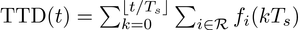
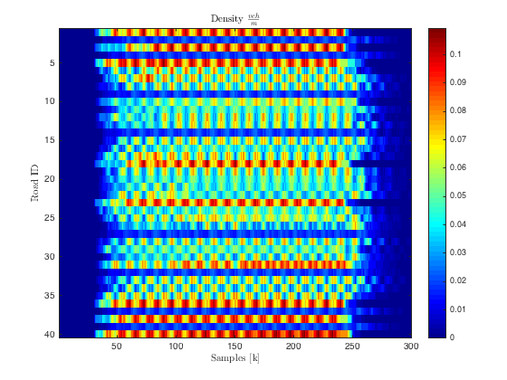
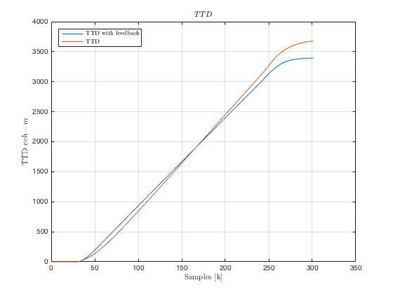
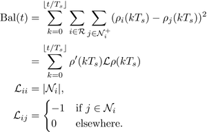
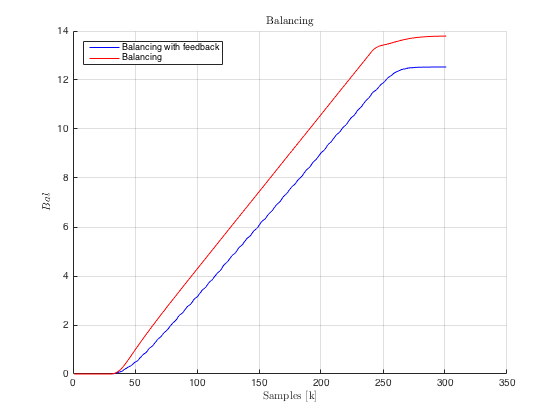
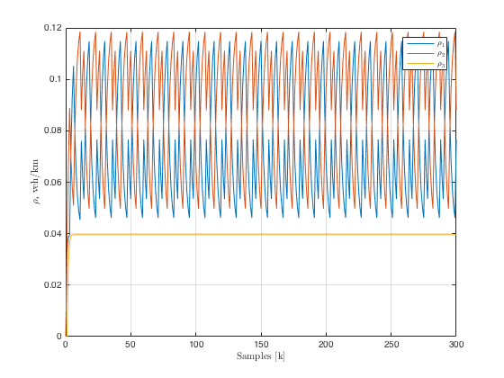
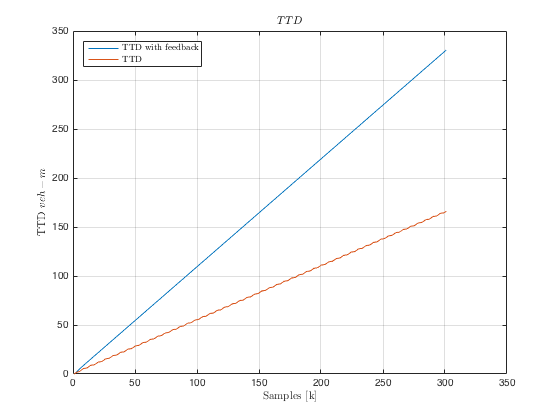
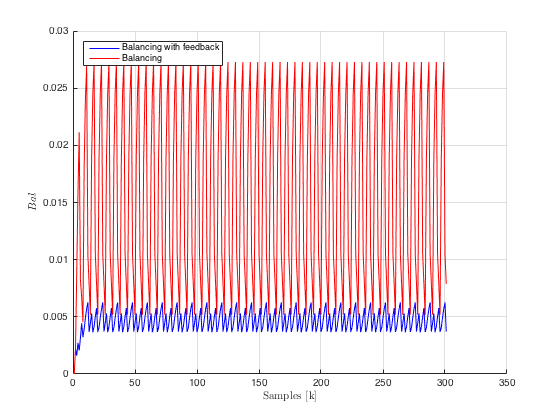

ITS Session 2: Control of large scale Traffic Networks
Contents
TTD
Total Travel Distance TTD is defined as:

Computing Measurements (Open Loop)
First let compute and observe the behaviour of the TTD for the network without control:
time = size(totDensitySCTM,2); nRoads = size(totDensitySCTM,1); TTDNC = zeros(1,time); f = TTDNC; for i = 1 : time for j = 1 : nRoads v = netNoControlSCTM.roads(j).maxSpeed; w = netNoControlSCTM.roads(j).congSpeed; rhoMax = netNoControlSCTM.roads(j).maxDensity; f(i) = min(totDensitySCTM(j,i)*v,... w*(rhoMax - totDensitySCTM(j,i))); TTDNC(i) = TTDNC(i) + f(i); end if i>1 TTDNC(i) = TTDNC(i) + TTDNC(i-1); end end
Control Centralized
Compute the network parameters for a network that should be controlled, in this case the problem will be applied over a S-CTM network like model. (In general they are the same for the uncontrolled network except from the isControlled attribute.
nRows = 4; nCols = 4; [incMat, adjMat] = buildManhattanMultipleInOut(nRows,nCols); nRoads = size(incMat,1); Ts = 15; % sampling time Tc = 90; % cycle time of traffic lights T = Tc/Ts; % cycle time/ sampling time Li = 500; % cell length [m] maxSpeed = 50/3.6; % free flow speed [m/s] maxDensity = 0.125; % maximum density [veh/m] maxFlow = 0.55; % maximum flow [veh/s] rhoC = maxFlow/maxSpeed; % critical density congSpeed = abs(maxFlow/(rhoC - maxDensity)); % w type = 'RoadSignFifoCTM';% model type netControlSCTM = Net(Ts, T, (1:nRoads)'); netControlSCTM.iM = incMat; netControlSCTM.turnings = adjMat;
Set parameters to the network
netControlSCTM.initialize(Li, maxSpeed, congSpeed, maxDensity, ...
maxFlow, rhoC, type)
Setup the flag so the network is run under regulated control control. Lights are going to be setup since it is just inside the Net model that the automatic control signal is selected.
netControlSCTM.isControlled= 1; setTrafficLightsManhattanMultipleIO(netControlSCTM,nCols); % % _Note: This can be verified in the simul method in the_ |Net| _class_
Setup for simulation parameters:
nCycles = 50; time = [1 T*nCycles]; % number of iterations Sout = maxFlow*ones(nRoads,time(end)); % burstValue = 0.4; t0 = time(end)*0.1; tf = time(end)*0.8; Din = inputDemandManhattan(netNoControlSCTM, burstValue,... t0, tf, time(end));
Simulation with Controller
Use the method simul in the object Net to simulate the system.
[totDensityControlSCTM,~,...
totLightsControlSCTM,~,~] = netControlSCTM.simul(time,zeros(1,nRoads),Din,Sout);
figure(1),clf imagesc(time(1):time(end),1:nRoads,totDensityControlSCTM) map = retrieve_color_heatmap; colormap(flipud(map)); colormap(jet) colorbar xlabel('Samples [k]','interpreter','latex') ylabel('Road ID','interpreter','latex') title('Density $\frac{veh}{m}$','interpreter','latex')
Compute indexes in the case of the controlled situation.
time = size(totDensityControlSCTM,2); nRoads = size(totDensityControlSCTM,1); TTDC = zeros(1,time); f = TTDC; for i = 1 : time for j = 1 : nRoads v = netControlSCTM.roads(j).maxSpeed; w = netControlSCTM.roads(j).congSpeed; rhoMax = netControlSCTM.roads(j).maxDensity; f(i) = min(totDensityControlSCTM(j,i)*v,... w*(rhoMax - totDensityControlSCTM(j,i))); TTDC(i) = TTDC(i) + f(i); end if i>1 TTDC(i) = TTDC(i) + TTDC(i-1); end end
figure(2),clf plot(1:time(end),TTDC,1:time(end),TTDNC),grid xlabel('Samples [k]','interpreter','latex') ylabel('TTD $veh-m$','interpreter','latex') title('$TTD$','interpreter','latex') lgn = legend('TTD with feedback', 'TTD','Location','NorthWest'); set(lgn,'interpreter','latex');
Balancing
Balancing is an indicator given by:

We compute the balance for both cases and we compare the degree of improvement.
BAL = zeros(1,time(end)); BALNC = zeros(1,time(end)); Lap = zeros(nRoads); for i = 1 : size(Lap,1) for j = 1 : size(Lap,1) %disp(i) %disp(j) if i==j Lap(i,j) = length(netControlSCTM.neighborsIn(i))+... length(netControlSCTM.neighborsOut(i)); elseif any([netControlSCTM.neighborsIn(i) ... netControlSCTM.neighborsOut(i)]==j) Lap(i,j) = -1; end end end for i = 1 : time(end) BAL(i) = totDensityControlSCTM(:,i)'*Lap*... totDensityControlSCTM(:,i); BALNC(i) = totDensitySCTM(:,i)'*Lap*... totDensitySCTM(:,i); end
The performance in time is visualized as
figure(3); clf; hold on; plot(1:time(end), cumsum(BAL), 'b');grid on plot(1:time(end), cumsum(BALNC), 'r'); lgn = legend('Balancing with feedback', 'Balancing','Location','NorthWest'); xlabel('Samples [k]','interpreter','latex') ylabel('$Bal$','interpreter','latex') title('Balancing','interpreter','latex')
Control a Merge
Let consider the merge example as before:

Network setup
incMatrixMerge = [1;1;-1]; adjMatrixMerge = [0 0 1;0 0 1;0 0 0]; nRoadsMerge = size(incMatrixMerge,1); Ts = 15; Tc = 90; T = Tc/Ts; Li = 250; maxSpeed = 50/3.6; maxDensity = 0.125; maxFlow = 0.55; rhoC = maxFlow/maxSpeed; congSpeed = abs(maxFlow/(rhoC - maxDensity)); type = 'RoadSignFifoCTM'; netMergeControl = Net(Ts, T, (1:nRoadsMerge)'); netMergeControl.iM = incMatrixMerge; netMergeControl.turnings = adjMatrixMerge; netMergeControl.initialize(Li, maxSpeed, congSpeed, maxDensity, ... maxFlow, rhoC, type)
Setting up the flag for control
netMergeControl.isControlled = 1; duty = 1/3; netMergeControl.lights(1).values = [ones(6,1)]; netMergeControl.lights(2).values = [ones(6,1)]; netMergeControl.lights(3).values = [ones(6,1)];
Setup for simulation parameters:
nCycles = 50; time = [1 T*nCycles]; SoutMerge = maxFlow*ones(nRoadsMerge,time(end)); DinMerge(1,:) = 300*ones(1,time(end)); DinMerge(2,:) = 700*ones(1,time(end)); DinMerge(3,:) = zeros(1,time(end)); [totDensityMergeControl,~,... totLightsMergeControl,~,~] = netMergeControl.simul(time,... zeros(1,nRoadsMerge),DinMerge,SoutMerge);
In order to check the performance we can verify the effect over the value
figure(4),clf plot((time(1)-1):time(end),totDensityMergeControl') grid on xlabel('Samples [k]','interpreter','latex') ylabel('$\rho_i$ veh/km','interpreter','latex') lgn = legend('$\rho_1$','$\rho_2$','$\rho_3$'); set(lgn,'interpreter','latex');
TTD for a Merge
time = size(totDensityMergeControl,2); nRoads = size(totDensityMergeControl,1); TTDCMerge = zeros(1,time); TTDNCMerge = TTDCMerge; f = TTDCMerge; for i = 1 : time for j = 1 : nRoads v = netMergeControl.roads(j).maxSpeed; w = netMergeControl.roads(j).congSpeed; rhoMax = netMergeControl.roads(j).maxDensity; % Controlled f(i) = min(totDensityMergeControl(j,i)*v,... w*(rhoMax - totDensityMergeControl(j,i))); TTDCMerge(i) = TTDCMerge(i) + f(i); % Uncontrolled f(i) = min(totDensityMerge(j,i)*v,... w*(rhoMax - totDensityMerge(j,i))); TTDNCMerge(i) = TTDNCMerge(i) + f(i); end if i>1 TTDCMerge(i) = TTDCMerge(i) + TTDCMerge(i-1); TTDNCMerge(i) = TTDNCMerge(i) + TTDNCMerge(i-1); end end
Visualized as:
figure(5),clf plot(1:time(end),TTDCMerge,1:time(end),TTDNCMerge),grid xlabel('Samples [k]','interpreter','latex') ylabel('TTD $veh-m$','interpreter','latex') title('$TTD$','interpreter','latex') lgn = legend('TTD with feedback', 'TTD','Location','NorthWest'); set(lgn,'interpreter','latex');
Balance for a Merge
We compute the balance for both cases and we compare the degree of improvement.
BALMerge = zeros(1,time(end)); BALNCMerge = zeros(1,time(end)); Lap = zeros(nRoads); for i = 1 : size(Lap,1) for j = 1 : size(Lap,1) %disp(i) %disp(j) if i==j Lap(i,j) = length(netMergeControl.neighborsIn(i))+... length(netMergeControl.neighborsOut(i)); elseif any([netMergeControl.neighborsIn(i) ... netMergeControl.neighborsOut(i)]==j) Lap(i,j) = -1; end end end for i = 1 : time(end) BALMerge(i) = totDensityMergeControl(:,i)'*Lap*... totDensityMergeControl(:,i); BALNCMerge(i) = totDensityMerge(:,i)'*Lap*... totDensityMerge(:,i); end
The performance in time is visualized as
figure(6); clf; hold on; plot(1:time(end), BALMerge, 'b');grid on plot(1:time(end), BALNCMerge, 'r'); lgn = legend('Balancing with feedback', 'Balancing','Location','NorthWest'); xlabel('Samples [k]','interpreter','latex') ylabel('$Bal$','interpreter','latex')